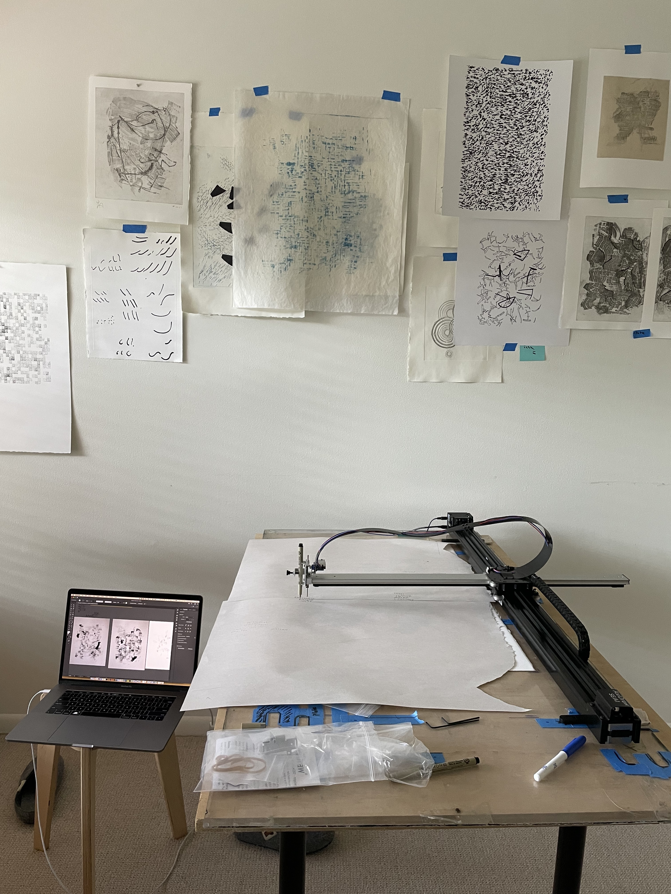

PLOTTER PRINTING is something I use daily in my printmaking practice. Prints can be made with purely digital marks, or hand marks that have been digitized. Using web software and a graphics library called d3.js, I create data-driven compositions and use AxiDraw plotters to create unique or edition work.
Equipment:AxiDraw SE/A3, 11”x17” working area
AxiDraw SE/A1, 34”x22” working area

